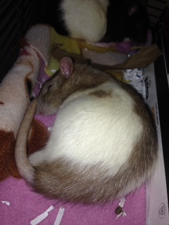
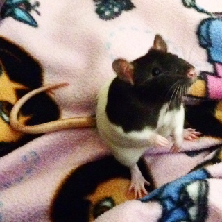
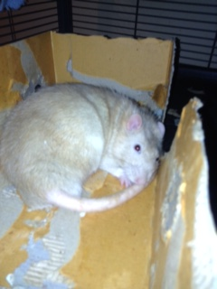
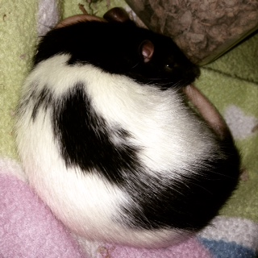

Meet the ratz
Toopy

Toopy is a friendly and spunky cinnamon hooded rat.
Pinball

Pinball may be skittish but inside he is a little goofball. He is a black hooded rat.
Latte

This little beige rat is a little sweetie and loves to give kisses.
Snickers

This black hooded rat is fierce but friendly. He is also a good climber.